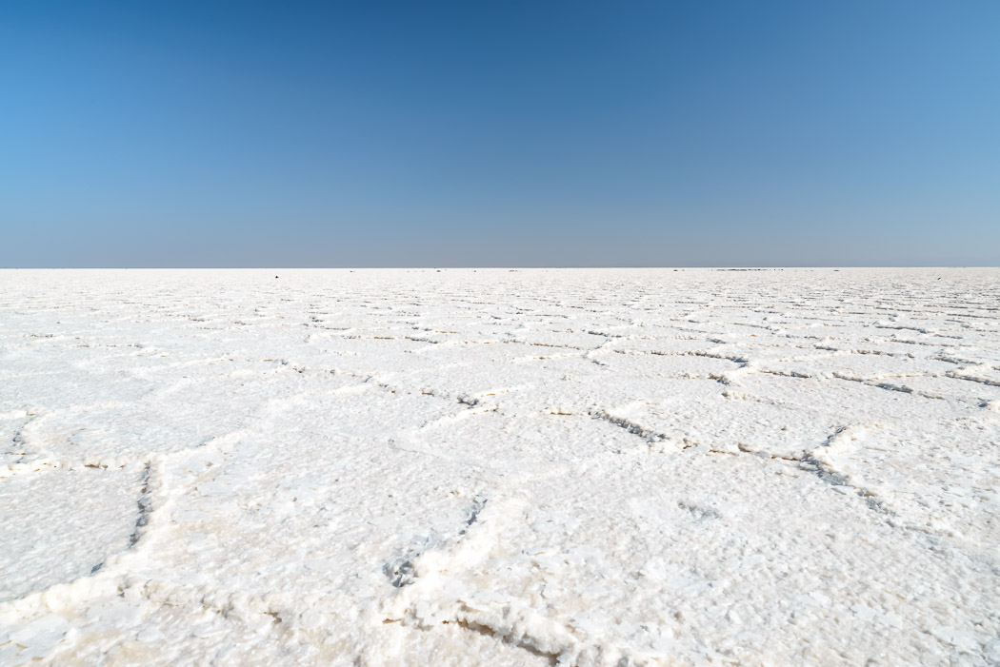

Mit der, wie wir langsam vermuten, landesüblichen Verspätung von einer Stunde werden wir um 5:00 Uhr zu unserem Ausflug in die Danakil Wüste abgeholt. Es dauert eine Weile bis wir uns vom Hochplateau, auf dem Mekele noch liegt, über Serpentinen in die Wüste hinab geschraubt haben. Die Landschaft ist international. Wir starten in Mexiko, durchqueren einen jordanischen Streifen, fahren kurz durch Island bis wir in der bolivianischen Uyuni ankommen.
Wir fahren in drei Jeeps nach Norden bis ins Grenzgebiet zu Eritrea. Aus (angeblich) diesem Grund borgen wir uns bei einem Stützpunkt zwei Soldaten aus, die sich auf den Beifahrersitz quetschen. Durch die Klimaanlage, die vom Tourunternehmen ständig erwähnt wurde, merken wir erst beim Aussteigen, dass die nächtliche Kälte der Berge einer krassen Hitze gewichen ist.
Die Region Afar unterscheidet sich stark von Tigray. So weit das Auge reicht sehen wir nur Salz. Mal strahlend weiß, mal dreckig braun. Hier wächst fast nichts. Die Afar sind Teilzeit-Nomaden und bitter arm. Ihre Dörfer oder Lager bestehen aus nichts als den kleinen Hütten, die wie Iglu-Zelte aus der Steinzeit aussehen: Halbkugeln mit Säcken und Stroh gedeckt, der Eingang ein kleines Loch. Schwer zu sagen, wie sie ihre Tiere ernähren. Hier wächst fast nichts. Geld wird vor allem mit dem Salz verdient, dass sie in Knochenarbeit der Wüste abringen. Uns kommen lange Kamelkarawanen entgegen, die das Salz in langen Märschen nach Mekele bringen.
Unser Ziel ist Dallol. Dieser merkwürdige Ort liegt 120m unter dem Meeresspiegel und ist eine Art Vulkan, ragt aber nicht mehr als 30m in die "Höhe". Die Aktivität spielt sich tief in der Erde ab und äußert sich seit längerem nur dadurch, dass Wasser aus dem Boden austritt. Auf dem Weg nach oben wird es unter anderem mit Schwefel und Kalium angereichert und bildet brodelnde Becken und teils bizarre Ablagerungen von Neongelb über Giftgrün bis Rostrot. Die Luft ist sehr schwefelig. Auch die Temperatur von 36 Grad (wir haben Glück, es ist kälter als sonst) ist höllisch. Abseits der Becken ist alles erstarrt, so dass wir buchstäblich auf den entstandenen Strukturen gehen können.

Auf Afar bedeutet Dallol "Auflösung". Vielleicht, weil sich die Welt hier aufzulösen scheint? Oder vielleicht, weil sich allerlei unliebsame Dinge in den extrem sauren Pools auflösen lassen? Dies mag leicht einer der unwirtlichsten Orte der Welt sein. Das verrückte Farbenspiel und die wilden Strukturen wie pilzförmige Aufschwemmungen, erstarrte Kaskaden, kleine Schlote und blubbernde Becken muten geradezu außerirdisch unnatürlich an.
Auf dem Rückweg rückt das Salz in den Vordergrund. Aber es ist so heiß, dass man eigentlich nicht aussteigen möchte. Es gibt große Salzseen und einen Salz-Canyon, in dem zig Meter hohe, braun-weiß gestreifte Salztürme ausgewaschen wurden. Wir überfallen mit einem Haufen anderer Touristen eine Gruppe "Salzer" bei ihrer harten Arbeit. Eine andere Art von Hölle. Sie stemmen große Platten vom Boden und klopfen sie in eine Art flaches, transportfähiges Standard-Format. Die Kamele liegen noch bräsig dazwischen. Die kommen erst später an die Reihe.